Erik e Arlindo — DRAFT · extração v01 11 fontes revisadas; seis tiras extraídas em 30 quadros nativos. Cada pixel RGBA preservado, incluindo alfa baixo. Nenhuma escala, pivô, correção de passada ou integração aplicada.
Cinco tiras retidas: AO09, AO10, ER08, ER09, ER10. ER03 (sete poses) e ER06 (corte de fonte) mantêm os gates anteriores. Cinco outras tiras conservam a extração histórica. O contorno de alfa inclui efeitos e não comprova a altura do corpo.
Todas as 20 fontes · Auditoria e retângulos
AO02 Extração candidata — escala e pivô pendentes
Fonte e limites candidatos [{'x': 518, 'pixels_alpha_gt_8': 0, 'pixels_alpha_gt_128': 0, 'pixels_alpha_gt_0': 0}, {'x': 1023, 'pixels_alpha_gt_8': 0, 'pixels_alpha_gt_128': 0, 'pixels_alpha_gt_0': 16}, {'x': 1529, 'pixels_alpha_gt_8': 0, 'pixels_alpha_gt_128': 0, 'pixels_alpha_gt_0': 6}]
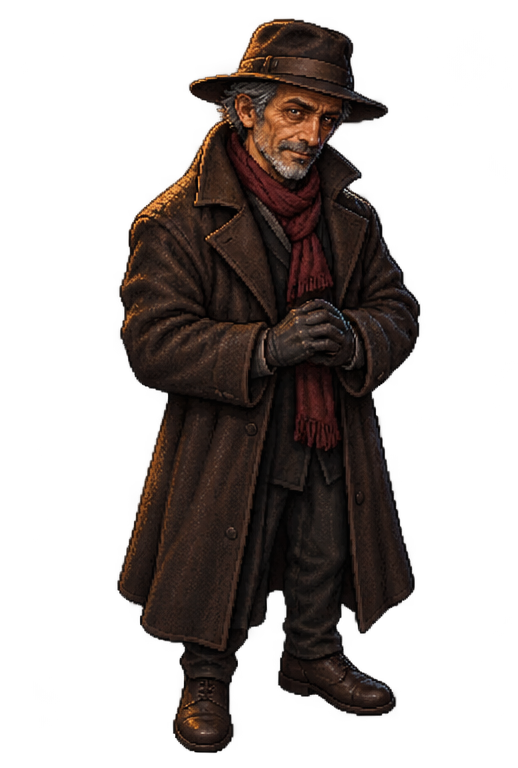
Quadro 1 · 518×768 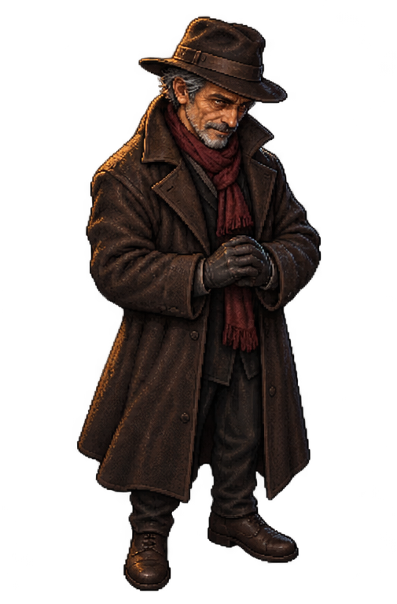
Quadro 2 · 505×768 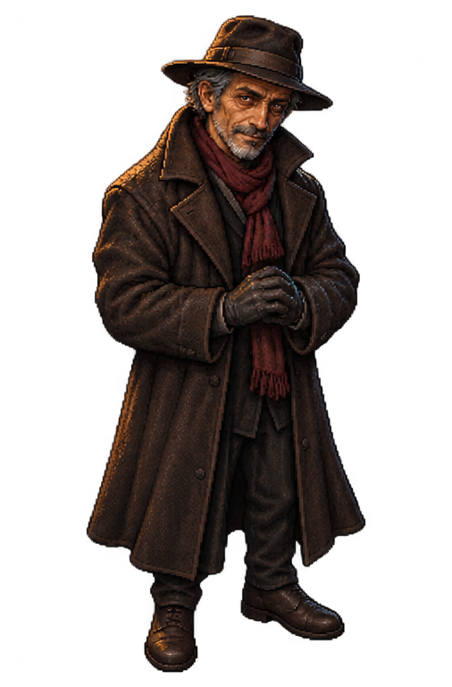
Quadro 3 · 506×768 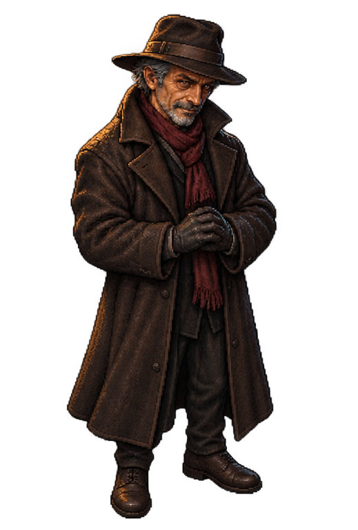
Quadro 4 · 519×768 AO05 Extração candidata — escala e pivô pendentes
Fonte e limites candidatos [{'x': 347, 'pixels_alpha_gt_8': 0, 'pixels_alpha_gt_128': 0, 'pixels_alpha_gt_0': 5}, {'x': 674, 'pixels_alpha_gt_8': 0, 'pixels_alpha_gt_128': 0, 'pixels_alpha_gt_0': 2}, {'x': 1019, 'pixels_alpha_gt_8': 0, 'pixels_alpha_gt_128': 0, 'pixels_alpha_gt_0': 0}, {'x': 1356, 'pixels_alpha_gt_8': 0, 'pixels_alpha_gt_128': 0, 'pixels_alpha_gt_0': 0}, {'x': 1694, 'pixels_alpha_gt_8': 0, 'pixels_alpha_gt_128': 0, 'pixels_alpha_gt_0': 0}]
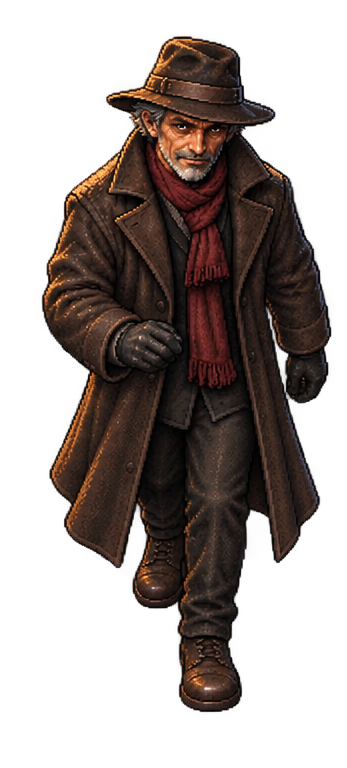
Quadro 1 · 347×768 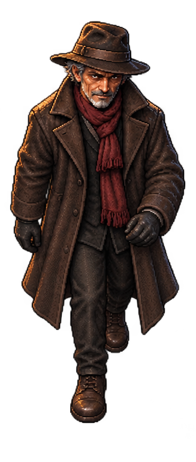
Quadro 2 · 327×768 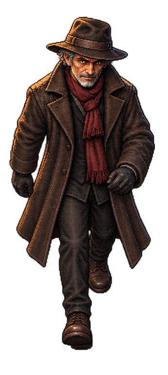
Quadro 3 · 345×768 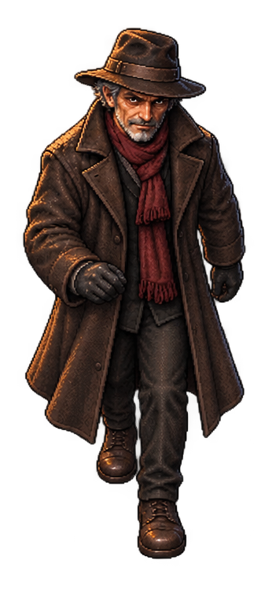
Quadro 4 · 337×768 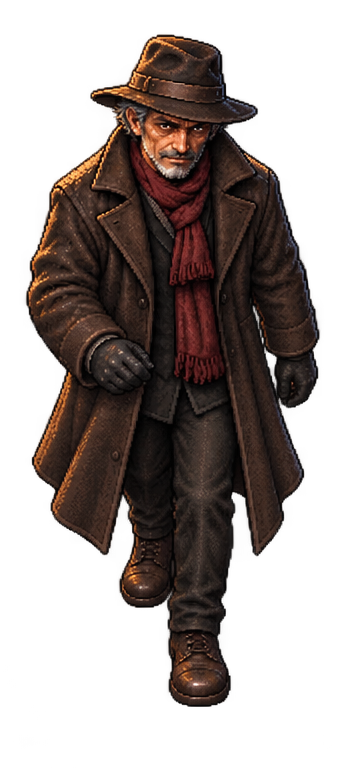
Quadro 5 · 338×768 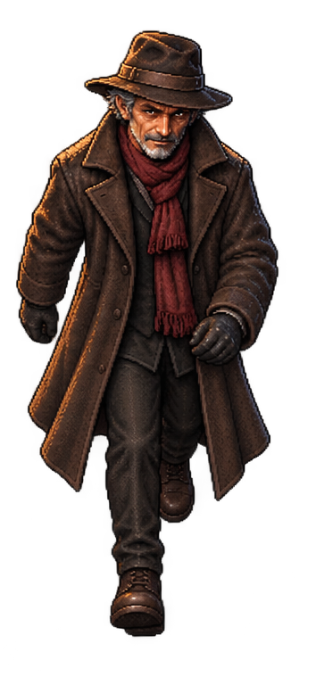
Quadro 6 · 354×768 AO06 Extração candidata — escala e pivô pendentes
Fonte e limites candidatos [{'x': 326, 'pixels_alpha_gt_8': 0, 'pixels_alpha_gt_128': 0, 'pixels_alpha_gt_0': 5}, {'x': 643, 'pixels_alpha_gt_8': 0, 'pixels_alpha_gt_128': 0, 'pixels_alpha_gt_0': 8}, {'x': 948, 'pixels_alpha_gt_8': 0, 'pixels_alpha_gt_128': 0, 'pixels_alpha_gt_0': 34}, {'x': 1255, 'pixels_alpha_gt_8': 0, 'pixels_alpha_gt_128': 0, 'pixels_alpha_gt_0': 17}, {'x': 1579, 'pixels_alpha_gt_8': 0, 'pixels_alpha_gt_128': 0, 'pixels_alpha_gt_0': 0}]
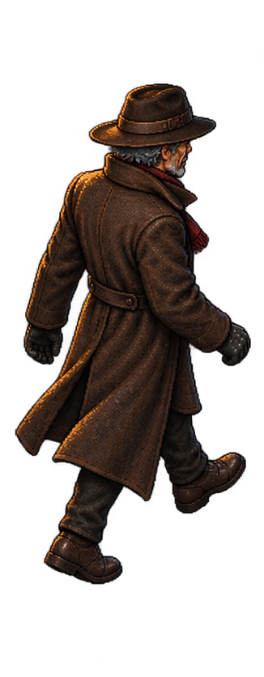
Quadro 1 · 326×836 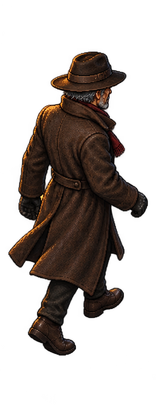
Quadro 2 · 317×836 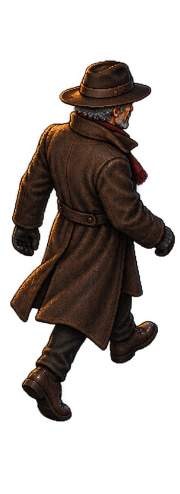
Quadro 3 · 305×836 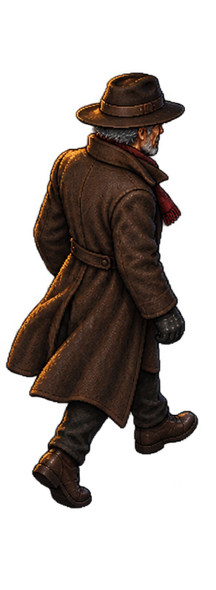
Quadro 4 · 307×836 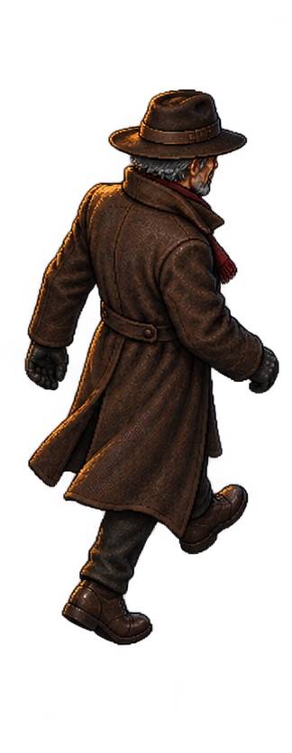
Quadro 5 · 324×836 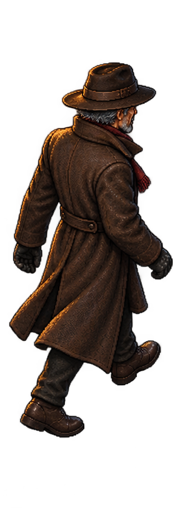
Quadro 6 · 302×836 AO08 Extração candidata — escala e pivô pendentes
Fonte e limites candidatos [{'x': 456, 'pixels_alpha_gt_8': 0, 'pixels_alpha_gt_128': 0, 'pixels_alpha_gt_0': 0}, {'x': 954, 'pixels_alpha_gt_8': 0, 'pixels_alpha_gt_128': 0, 'pixels_alpha_gt_0': 0}, {'x': 1617, 'pixels_alpha_gt_8': 0, 'pixels_alpha_gt_128': 0, 'pixels_alpha_gt_0': 21}]
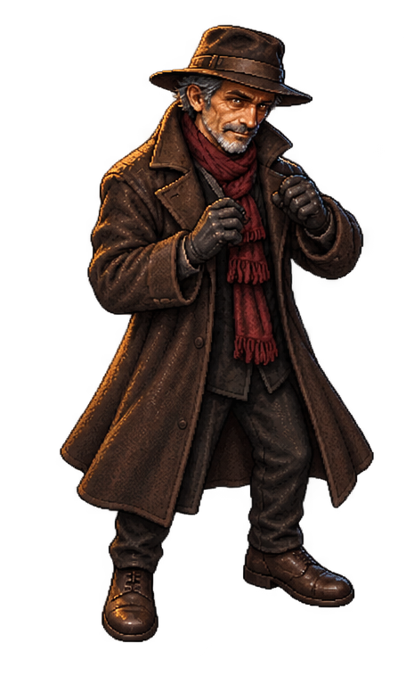
Quadro 1 · 456×768 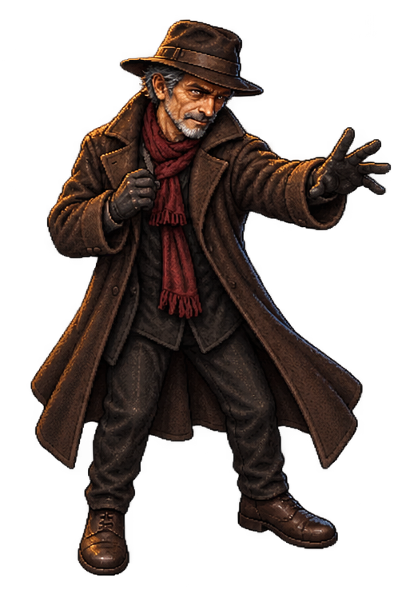
Quadro 2 · 498×768 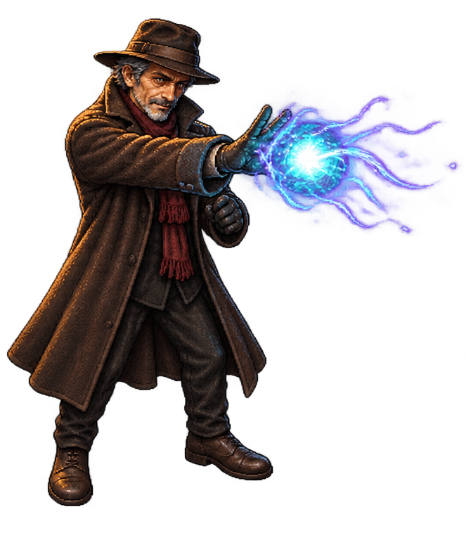
Quadro 3 · 663×768 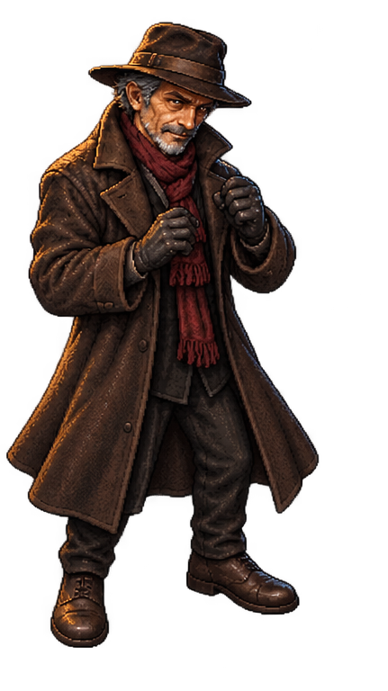
Quadro 4 · 431×768 AO09 Separação por retângulos retida — não extraída
Fonte e limites candidatos [{'x': 308, 'pixels_alpha_gt_8': 0, 'pixels_alpha_gt_128': 0, 'pixels_alpha_gt_0': 0}, {'x': 597, 'pixels_alpha_gt_8': 39, 'pixels_alpha_gt_128': 0, 'pixels_alpha_gt_0': 118}, {'x': 921, 'pixels_alpha_gt_8': 211, 'pixels_alpha_gt_128': 48, 'pixels_alpha_gt_0': 274}, {'x': 1350, 'pixels_alpha_gt_8': 235, 'pixels_alpha_gt_128': 158, 'pixels_alpha_gt_0': 305}, {'x': 1686, 'pixels_alpha_gt_8': 0, 'pixels_alpha_gt_128': 0, 'pixels_alpha_gt_0': 140}]
AO10 Separação por retângulos retida — não extraída
Fonte e limites candidatos [{'x': 321, 'pixels_alpha_gt_8': 0, 'pixels_alpha_gt_128': 0, 'pixels_alpha_gt_0': 60}, {'x': 616, 'pixels_alpha_gt_8': 28, 'pixels_alpha_gt_128': 19, 'pixels_alpha_gt_0': 112}, {'x': 914, 'pixels_alpha_gt_8': 67, 'pixels_alpha_gt_128': 65, 'pixels_alpha_gt_0': 79}, {'x': 1314, 'pixels_alpha_gt_8': 48, 'pixels_alpha_gt_128': 47, 'pixels_alpha_gt_0': 79}, {'x': 1678, 'pixels_alpha_gt_8': 47, 'pixels_alpha_gt_128': 36, 'pixels_alpha_gt_0': 84}]
ER02 Extração candidata — escala e pivô pendentes
Fonte e limites candidatos [{'x': 520, 'pixels_alpha_gt_8': 0, 'pixels_alpha_gt_128': 0, 'pixels_alpha_gt_0': 0}, {'x': 1016, 'pixels_alpha_gt_8': 0, 'pixels_alpha_gt_128': 0, 'pixels_alpha_gt_0': 0}, {'x': 1512, 'pixels_alpha_gt_8': 0, 'pixels_alpha_gt_128': 0, 'pixels_alpha_gt_0': 0}]
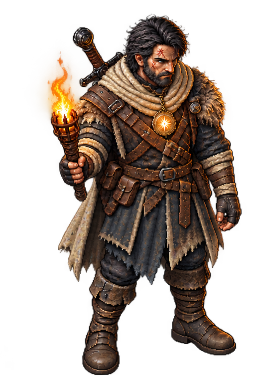
Quadro 1 · 520×768 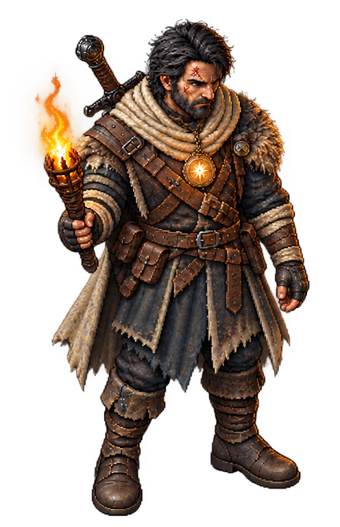
Quadro 2 · 496×768 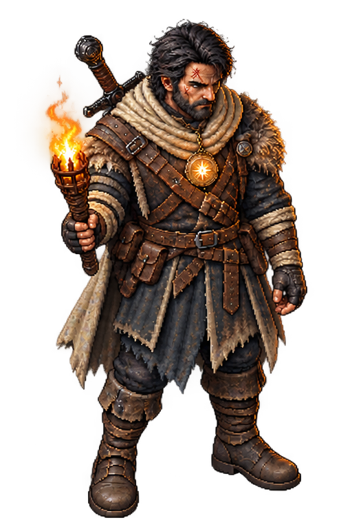
Quadro 3 · 496×768 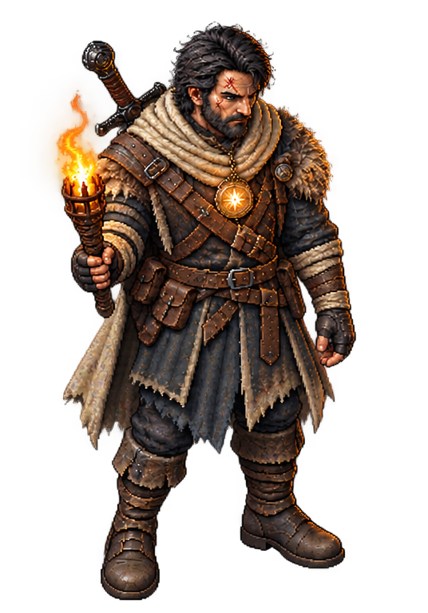
Quadro 4 · 536×768 ER07 Extração candidata — escala e pivô pendentes
Fonte e limites candidatos [{'x': 341, 'pixels_alpha_gt_8': 0, 'pixels_alpha_gt_128': 0, 'pixels_alpha_gt_0': 0}, {'x': 666, 'pixels_alpha_gt_8': 0, 'pixels_alpha_gt_128': 0, 'pixels_alpha_gt_0': 2}, {'x': 986, 'pixels_alpha_gt_8': 0, 'pixels_alpha_gt_128': 0, 'pixels_alpha_gt_0': 0}, {'x': 1314, 'pixels_alpha_gt_8': 0, 'pixels_alpha_gt_128': 0, 'pixels_alpha_gt_0': 0}, {'x': 1640, 'pixels_alpha_gt_8': 0, 'pixels_alpha_gt_128': 0, 'pixels_alpha_gt_0': 0}]
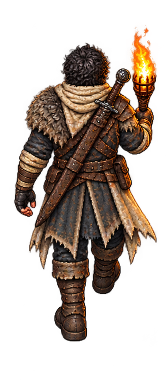
Quadro 1 · 341×793 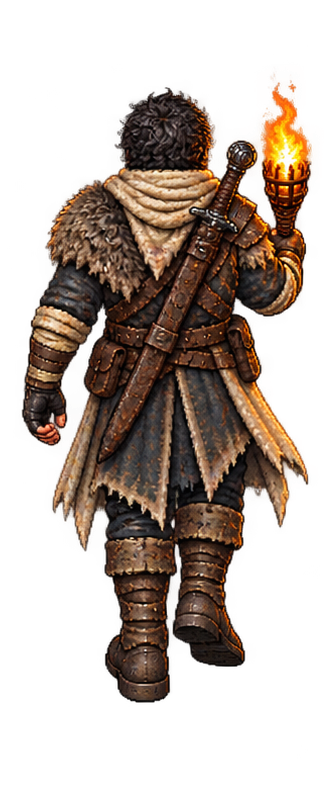
Quadro 2 · 325×793 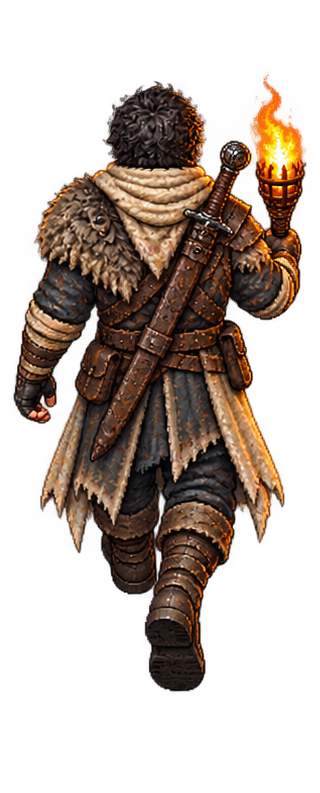
Quadro 3 · 320×793 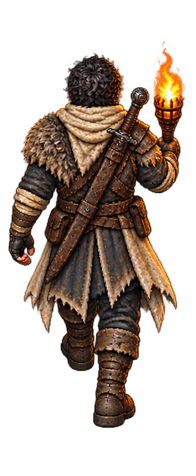
Quadro 4 · 328×793 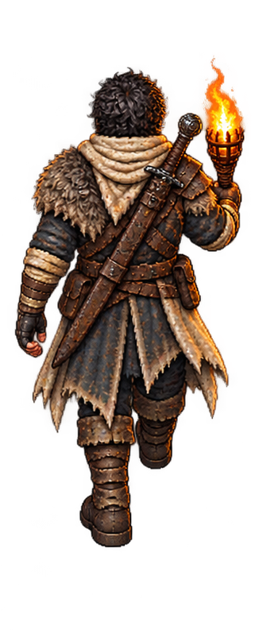
Quadro 5 · 326×793 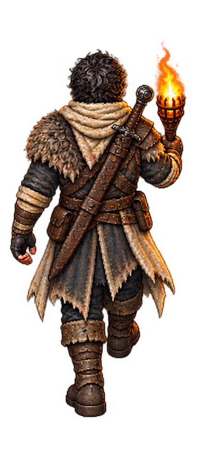
Quadro 6 · 343×793 ER08 Separação por retângulos retida — não extraída
Fonte e limites candidatos [{'x': 446, 'pixels_alpha_gt_8': 0, 'pixels_alpha_gt_128': 0, 'pixels_alpha_gt_0': 0}, {'x': 984, 'pixels_alpha_gt_8': 39, 'pixels_alpha_gt_128': 21, 'pixels_alpha_gt_0': 177}, {'x': 1612, 'pixels_alpha_gt_8': 0, 'pixels_alpha_gt_128': 0, 'pixels_alpha_gt_0': 0}]
ER09 Separação por retângulos retida — não extraída
Fonte e limites candidatos [{'x': 333, 'pixels_alpha_gt_8': 0, 'pixels_alpha_gt_128': 0, 'pixels_alpha_gt_0': 0}, {'x': 671, 'pixels_alpha_gt_8': 0, 'pixels_alpha_gt_128': 0, 'pixels_alpha_gt_0': 18}, {'x': 1035, 'pixels_alpha_gt_8': 0, 'pixels_alpha_gt_128': 0, 'pixels_alpha_gt_0': 23}, {'x': 1404, 'pixels_alpha_gt_8': 14, 'pixels_alpha_gt_128': 11, 'pixels_alpha_gt_0': 123}, {'x': 1747, 'pixels_alpha_gt_8': 0, 'pixels_alpha_gt_128': 0, 'pixels_alpha_gt_0': 24}]
ER10 Separação por retângulos retida — não extraída
Fonte e limites candidatos [{'x': 328, 'pixels_alpha_gt_8': 0, 'pixels_alpha_gt_128': 0, 'pixels_alpha_gt_0': 0}, {'x': 664, 'pixels_alpha_gt_8': 0, 'pixels_alpha_gt_128': 0, 'pixels_alpha_gt_0': 36}, {'x': 1005, 'pixels_alpha_gt_8': 0, 'pixels_alpha_gt_128': 0, 'pixels_alpha_gt_0': 116}, {'x': 1356, 'pixels_alpha_gt_8': 33, 'pixels_alpha_gt_128': 30, 'pixels_alpha_gt_0': 93}, {'x': 1744, 'pixels_alpha_gt_8': 49, 'pixels_alpha_gt_128': 45, 'pixels_alpha_gt_0': 86}]